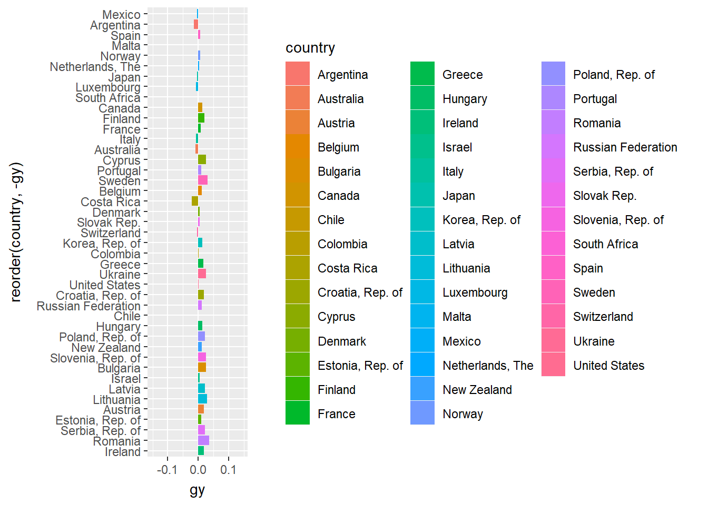
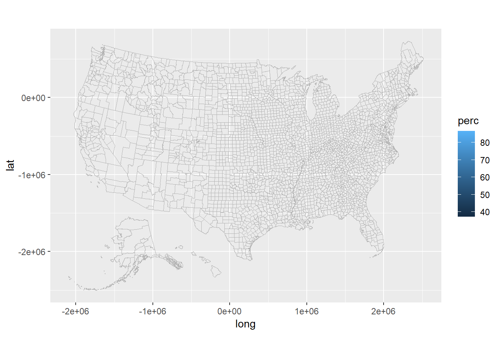
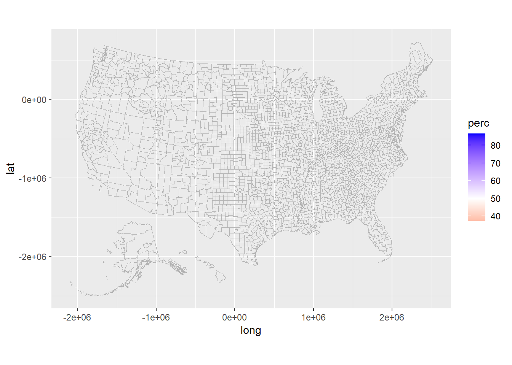

library(ggplot2)## Warning: package 'ggplot2' was built under R version 4.1.3library(gganimate)## Warning: package 'gganimate' was built under R version 4.1.3library(dplyr)##
## Attaching package: 'dplyr'## The following objects are masked from 'package:stats':
##
## filter, lag## The following objects are masked from 'package:base':
##
## intersect, setdiff, setequal, unionlibrary(tidyverse)## -- Attaching packages ------------------------------------------------------ tidyverse 1.3.1 --## v tibble 3.1.5 v purrr 0.3.4
## v tidyr 1.1.4 v stringr 1.4.0
## v readr 2.0.2 v forcats 0.5.1## -- Conflicts --------------------------------------------------------- tidyverse_conflicts() --
## x dplyr::filter() masks stats::filter()
## x dplyr::lag() masks stats::lag()library(tidyr)
library(socviz)## Warning: package 'socviz' was built under R version 4.1.2imf_growth_quarterly <- read.csv("C:/Users/nickp/Downloads/imf_growth_quarterly.csv")
# gy: growth rate of GDP per worker
#Graph 1
ggplot(data = imf_growth_quarterly, aes(x = reorder(country, -gy), y = gy, fill = country, sort(gy, decreasing = T))) +
geom_col() +
coord_flip() +
geom_tile() +
transition_states(qt, transition_length = 1)##
Rendering [>----------------------------------------------------------] at 0.9 fps ~ eta: 2m
Rendering [=>--------------------------------------------------------] at 0.92 fps ~ eta: 2m
Rendering [=>---------------------------------------------------------] at 0.9 fps ~ eta: 2m
Rendering [==>-------------------------------------------------------] at 0.92 fps ~ eta: 2m
Rendering [===>------------------------------------------------------] at 0.93 fps ~ eta: 2m
Rendering [====>-----------------------------------------------------] at 0.94 fps ~ eta: 2m
Rendering [====>-----------------------------------------------------] at 0.95 fps ~ eta: 2m
Rendering [=====>----------------------------------------------------] at 0.95 fps ~ eta: 2m
Rendering [======>---------------------------------------------------] at 0.95 fps ~ eta: 2m
Rendering [=======>--------------------------------------------------] at 0.95 fps ~ eta: 2m
Rendering [========>-------------------------------------------------] at 0.94 fps ~ eta: 2m
Rendering [========>-------------------------------------------------] at 0.94 fps ~ eta: 1m
Rendering [=========>------------------------------------------------] at 0.94 fps ~ eta: 1m
Rendering [==========>-----------------------------------------------] at 0.93 fps ~ eta: 1m
Rendering [===========>----------------------------------------------] at 0.93 fps ~ eta: 1m
Rendering [===========>----------------------------------------------] at 0.92 fps ~ eta: 1m
Rendering [============>---------------------------------------------] at 0.92 fps ~ eta: 1m
Rendering [=============>--------------------------------------------] at 0.93 fps ~ eta: 1m
Rendering [==============>-------------------------------------------] at 0.94 fps ~ eta: 1m
Rendering [===============>------------------------------------------] at 0.94 fps ~ eta: 1m
Rendering [================>-----------------------------------------] at 0.94 fps ~ eta: 1m
Rendering [================>-----------------------------------------] at 0.95 fps ~ eta: 1m
Rendering [=================>----------------------------------------] at 0.95 fps ~ eta: 1m
Rendering [==================>---------------------------------------] at 0.95 fps ~ eta: 1m
Rendering [===================>--------------------------------------] at 0.95 fps ~ eta: 1m
Rendering [====================>-------------------------------------] at 0.95 fps ~ eta: 1m
Rendering [=====================>------------------------------------] at 0.95 fps ~ eta: 1m
Rendering [======================>-----------------------------------] at 0.94 fps ~ eta: 1m
Rendering [=======================>----------------------------------] at 0.94 fps ~ eta: 1m
Rendering [========================>---------------------------------] at 0.94 fps ~ eta: 1m
Rendering [=========================>--------------------------------] at 0.94 fps ~ eta: 1m
Rendering [=========================>--------------------------------] at 0.95 fps ~ eta: 1m
Rendering [==========================>-------------------------------] at 0.95 fps ~ eta: 1m
Rendering [===========================>------------------------------] at 0.95 fps ~ eta: 1m
Rendering [============================>-----------------------------] at 0.95 fps ~ eta: 1m
Rendering [=============================>----------------------------] at 0.95 fps ~ eta: 1m
Rendering [==============================>---------------------------] at 0.95 fps ~ eta: 50s
Rendering [==============================>---------------------------] at 0.95 fps ~ eta: 49s
Rendering [===============================>--------------------------] at 0.95 fps ~ eta: 47s
Rendering [===============================>--------------------------] at 0.95 fps ~ eta: 46s
Rendering [================================>-------------------------] at 0.95 fps ~ eta: 45s
Rendering [=================================>------------------------] at 0.94 fps ~ eta: 44s
Rendering [=================================>------------------------] at 0.94 fps ~ eta: 43s
Rendering [==================================>-----------------------] at 0.94 fps ~ eta: 42s
Rendering [==================================>-----------------------] at 0.94 fps ~ eta: 41s
Rendering [===================================>----------------------] at 0.94 fps ~ eta: 40s
Rendering [====================================>---------------------] at 0.94 fps ~ eta: 39s
Rendering [====================================>---------------------] at 0.94 fps ~ eta: 38s
Rendering [=====================================>--------------------] at 0.94 fps ~ eta: 37s
Rendering [=====================================>--------------------] at 0.94 fps ~ eta: 36s
Rendering [======================================>-------------------] at 0.94 fps ~ eta: 35s
Rendering [======================================>-------------------] at 0.94 fps ~ eta: 34s
Rendering [=======================================>------------------] at 0.95 fps ~ eta: 33s
Rendering [========================================>-----------------] at 0.95 fps ~ eta: 32s
Rendering [========================================>-----------------] at 0.95 fps ~ eta: 31s
Rendering [=========================================>----------------] at 0.95 fps ~ eta: 30s
Rendering [=========================================>----------------] at 0.95 fps ~ eta: 29s
Rendering [==========================================>---------------] at 0.94 fps ~ eta: 28s
Rendering [===========================================>--------------] at 0.94 fps ~ eta: 27s
Rendering [===========================================>--------------] at 0.94 fps ~ eta: 25s
Rendering [============================================>-------------] at 0.94 fps ~ eta: 24s
Rendering [============================================>-------------] at 0.94 fps ~ eta: 23s
Rendering [=============================================>------------] at 0.94 fps ~ eta: 22s
Rendering [=============================================>------------] at 0.94 fps ~ eta: 21s
Rendering [==============================================>-----------] at 0.94 fps ~ eta: 20s
Rendering [===============================================>----------] at 0.94 fps ~ eta: 19s
Rendering [===============================================>----------] at 0.94 fps ~ eta: 18s
Rendering [================================================>---------] at 0.94 fps ~ eta: 17s
Rendering [================================================>---------] at 0.95 fps ~ eta: 16s
Rendering [=================================================>--------] at 0.95 fps ~ eta: 15s
Rendering [=================================================>--------] at 0.95 fps ~ eta: 14s
Rendering [==================================================>-------] at 0.94 fps ~ eta: 13s
Rendering [===================================================>------] at 0.94 fps ~ eta: 12s
Rendering [===================================================>------] at 0.94 fps ~ eta: 11s
Rendering [====================================================>-----] at 0.94 fps ~ eta: 10s
Rendering [====================================================>-----] at 0.94 fps ~ eta: 8s
Rendering [=====================================================>----] at 0.94 fps ~ eta: 7s
Rendering [======================================================>---] at 0.94 fps ~ eta: 6s
Rendering [======================================================>---] at 0.94 fps ~ eta: 5s
Rendering [=======================================================>--] at 0.94 fps ~ eta: 4s
Rendering [=======================================================>--] at 0.94 fps ~ eta: 3s
Rendering [========================================================>-] at 0.94 fps ~ eta: 2s
Rendering [========================================================>-] at 0.94 fps ~ eta: 1s
Rendering [==========================================================] at 0.94 fps ~ eta: 0s

#Graph 2
climate_opinion_2021 <- read.csv("C:/Users/nickp/Downloads/climate_opinion_2021.csv")
county_map <- county_map
climate_opinion <- climate_opinion_2021
climate_opinion <- climate_opinion %>% mutate(id = as.numeric(id))
county_map <- county_map %>% mutate(id = as.numeric(id))
climate_opinion <- left_join(climate_opinion, county_map, by = 'id')
map = ggplot(climate_opinion, aes(long, lat, fill = perc, group = group, text = GeoName)) +
geom_polygon(color = "gray70", size = 0.05) +
coord_equal()
map
map2 <- map +scale_fill_gradient2(low = "red",
mid = "white",
high = "blue",
na.value = "grey50",
midpoint = 50)
map2
```